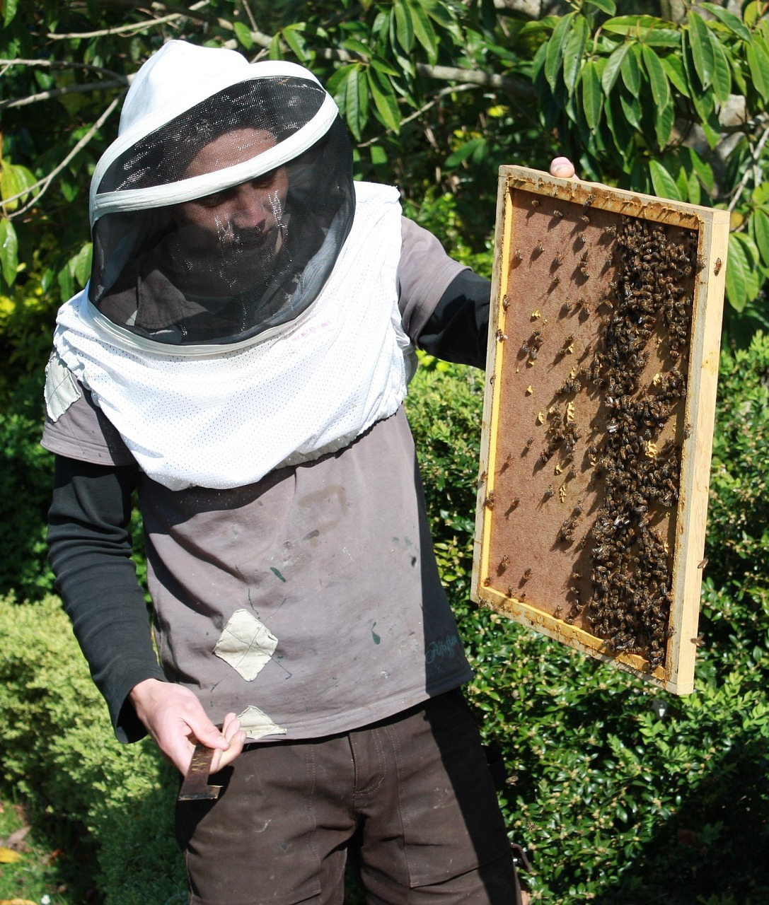
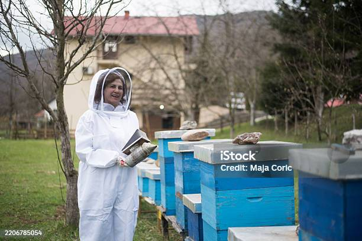

Bem-vindo a Rede Apimel!
 Explore o fascinante mundo das abelhas e da cultura de tecidos e descubra como essas áreas se conectam.

Explore o fascinante mundo das abelhas e da cultura de tecidos e descubra como essas áreas se conectam.

Informações detalhadas sobre a biologia, importância e conservação das abelhas.
Conheça MaisExplicação sobre as técnicas e aplicações da cultura de tecidos em pesquisa e conservação.